By R-Ladies Lisbon
Contents
Topics covered:
- Simple data types
- Data structures (e.g. data frames)
- Control statements (if, while, for)
- Functions
- Reading data from files
- Libraries, getting help, working directory
Simple data types
- Logical (TRUE or FALSE)
- Character ("a", "apple", ...)
- Numeric:
- integer (-1, 0, 1, 2, ...)
- double (3.14, -2.0, ...)
Simple data types
logic_var <- TRUE
typeof(logic_var)
## [1] "logical"
char_var <- "apple"
typeof(char_var)
## [1] "character"
Simple data types
int_var <- 30L # Notice the L to force integer type
typeof(int_var)
## [1] "integer"
double_var <- 3.14
typeof(double_var)
## [1] "double"
Variable assignment
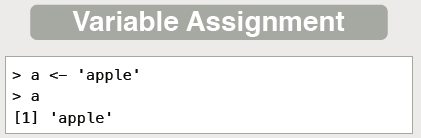
Variable assignment
Assign values to variables, to access them later:
x <- 5 + 7
To view a variable's content, we must type its name:
x
## [1] 12
Alternative -- to enclose the expression with ():
(x <- 5 + 7)
## [1] 12
Data structures
Data structures are ensembles of simple data types
- Vector (1-dim):
- all elements have the same type
- Matrix (2-dim):
- all elements have the same type
- Data frame (2-dim):
- each column can have a different data type
- Lists (2-dim), less used:
- each column can have different data type
- each column can have different length
- not covered in this workshop
Vectors
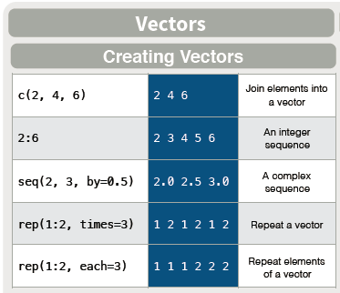
Vectors
Using c() to concatenate values:
(vec <- c(2, 4, 6))
## [1] 2 4 6
Using a simple sequence:
(vec <- 2:6)
## [1] 2 3 4 5 6
Vectors
Using seq(), for a sequence with steps 0.5:
(vec <- seq(2,3, by = 0.5))
## [1] 2.0 2.5 3.0
Vectors
Repeating a sequence:
(vec <- rep(1:2, times = 3))
## [1] 1 2 1 2 1 2
Repeating each value in a sequence:
(vec <- rep(1:2, each = 3))
## [1] 1 1 1 2 2 2
Vectors
Accessing vector elements:
vec <- c(2,4,6)
vec[1]
## [1] 2
Matrixes
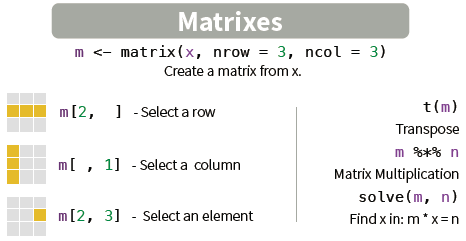
Matrixes
Multidimension structures that can have only 1 data type.
Creating a new matrix:
(m <- matrix(1:9, nrow = 3, ncol = 3))
## [,1] [,2] [,3]
## [1,] 1 4 7
## [2,] 2 5 8
## [3,] 3 6 9
Matrixes
Accessing elements of a matrix:
m[2, ] # Accessing a row
## [1] 2 5 8
m[ ,1] # Accessing a column
## [1] 1 2 3
m[2,3] # Accessing an elements
## [1] 8
Matrixes
Operations with matrices:
t(m) # Transposed of a matrix
## [,1] [,2] [,3]
## [1,] 1 2 3
## [2,] 4 5 6
## [3,] 7 8 9
Matrixes
Operations with matrices:
m*m # Element-by-element multiplication
## [,1] [,2] [,3]
## [1,] 1 16 49
## [2,] 4 25 64
## [3,] 9 36 81
Matrixes
Operations with matrices:
m %*% m # Matrix multiplication
## [,1] [,2] [,3]
## [1,] 30 66 102
## [2,] 36 81 126
## [3,] 42 96 150
Dataframes

Dataframes
Multidimensional structures used to store data tables (Excel-style):
(df <- data.frame(x = 1:3, y = c('a','b','c')))
## x y
## 1 1 a
## 2 2 b
## 3 3 c
A dataframe can be seen both as:
- a list where all columns have the same height,
- a matrix where
- each column has a name, and
- different columns can have a different data types.
Dataframes
Accessing elements of a dataframe
- Accessing by index:
df[2,2]
## [1] b
## Levels: a b c
- Accessing by column name:
df$x
## [1] 1 2 3
Dataframes
Understanding a dataframe
nrow(df) # Number of rows
## [1] 3
ncol(df) # Number of columns
## [1] 2
dim(df) # Rows and columns
## [1] 3 2
Dataframes
Viewing a dataframe
head(df) # See the first 6 rows
## x y
## 1 1 a
## 2 2 b
## 3 3 c
View(df) # See the full dataframe
Dataframes
Concatenating dataframes
cbind(df,z=c(6,7,8))
## x y z
## 1 1 a 6
## 2 2 b 7
## 3 3 c 8
rbind(df,c(10,'a'))
## x y
## 1 1 a
## 2 2 b
## 3 3 c
## 4 10 a
Dataframes
Advanced issue: data.frame vs data_frame (tidyverse)
The base function data.frame turns char columns into factors
(df1 <- data.frame(x = 1:3, y = c('a','b','c')))
## x y
## 1 1 a
## 2 2 b
## 3 3 c
Dataframes
Advanced issue: data.frame vs data_frame (tidyverse)
The base function data.frame turns char columns into factors
rbind(df1, c(4,'z'))
## Warning in `[<-.factor`(`*tmp*`, ri, value = "z"): invalid factor level, NA
## generated
## x y
## 1 1 a
## 2 2 b
## 3 3 c
## 4 4 <NA>
Dataframes
Advanced issue: data.frame vs data_frame (tidyverse)
The base function data.frame turns char columns into factors
library(tidyverse)
(df2 <- data_frame(x = 1:3, y = c('a','b','c')))
## # A tibble: 3 × 2
## x y
## <int> <chr>
## 1 1 a
## 2 2 b
## 3 3 c
Dataframes
Advanced issue: data.frame vs data_frame (tidyverse)
The base function data.frame turns char columns into factors
rbind(df2, c(4,'z'))
## # A tibble: 4 × 2
## x y
## * <chr> <chr>
## 1 1 a
## 2 2 b
## 3 3 c
## 4 4 z
Control statements
Programming takes advance of computers to perform repetitive tasks.
Control statements:
- Perform a task under certain conditions (if-else)
- Repeat a task while a condition holds (while)
- Repeat a task for a certain range of values (for)
Conditional statement if-else
Perform a task IF a condition holds
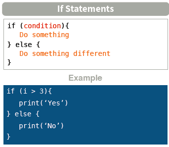
Conditional statement if-else
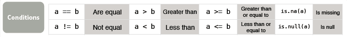
Common mistake: to use = instead of ==
i <- 4
if (i == 4){
print('Yes')
} else {
print('No')
}
## [1] "Yes"
Conditional statement if-else
Boolean operators & (AND), | (OR), ! (NOT), xor (exclusive OR)
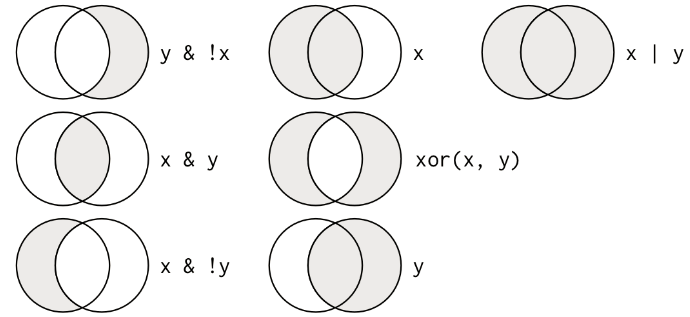
Common mistakes:
- To use || instead of | (and to use && instead of &)
Conditional statement if-else
i <- 4
j <- 5
if(i > 3 & i == j){
print('Everything\'s true')
} else {
print('Not everything\'s true')
}
## [1] "Not everything's true"
if(i > 3 | i == j){
print('At least one is true')
} else {
print('None is true')
}
## [1] "At least one is true"
While loop
Perform a task WHILE a condition holds
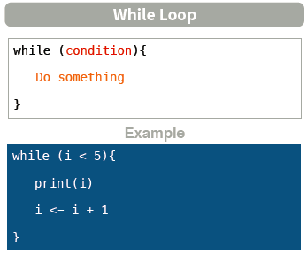
While loop
i <- 0
while(i < 5){
print(i)
i <- i+1
}
## [1] 0
## [1] 1
## [1] 2
## [1] 3
## [1] 4
While loop
Stopping the loop: 'break' statement
i <- 0
while(TRUE){
if(i >= 5) break
print(i)
i <- i+1
}
## [1] 0
## [1] 1
## [1] 2
## [1] 3
## [1] 4
(be careful with infinite loops...)
While loop
Skipping a step of the loop: 'next' statement
i <- 0
while(i < 5){
if(i == 1) {
i <- i + 1
next
}
print(i)
i <- i+1
}
## [1] 0
## [1] 2
## [1] 3
## [1] 4
('next' is similar to 'continue' in other languages)
For loop
Perform a task a for a certain number of values
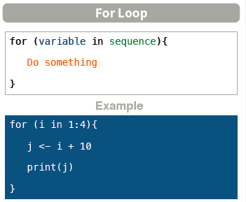
For loop
for(i in 1:4){
j <- i + 10
print(j)
}
## [1] 11
## [1] 12
## [1] 13
## [1] 14
For loop
for (year in c(2010,2011,2012,2013,2014,2015)){
print(paste("The year is", year))
}
## [1] "The year is 2010"
## [1] "The year is 2011"
## [1] "The year is 2012"
## [1] "The year is 2013"
## [1] "The year is 2014"
## [1] "The year is 2015"
Functions
Functions encapsulate a task into a single line of code
Why using functions?
- Code reuse: when you keep using the same piece of code.
- Readibility: if code becomes long, need to break it down into several functions.
- Focus: every class or function should do only one specific task.
Functions
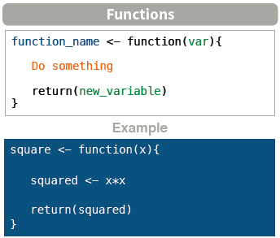
Functions
myFunction <- function(input_argument){
cube <- input_argument*input_argument*input_argument
return(cube)
}
print(myFunction(2))
## [1] 8
Reading data from files
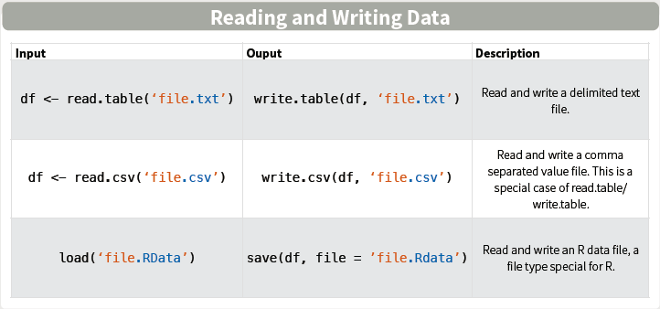
Reading data from files
(df1 <- read.csv('C:/Users/GICpr/Desktop/exemplo.csv'))
## Nome Idade
## 1 Joao 25
## 2 Ines 23
## 3 Ana 30
## 4 Pedro 29
Reading data from files
read.csv vs read_csv
library(tidyverse)
(df2 <- read_csv('C:/Users/GICpr/Desktop/exemplo.csv'))
## # A tibble: 4 × 2
## Nome Idade
## <chr> <int>
## 1 Joao 25
## 2 Ines 23
## 3 Ana 30
## 4 Pedro 29
Setting the working directory
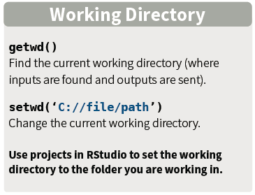
Getting help
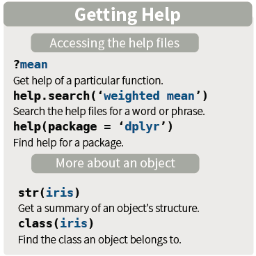
Using libraries
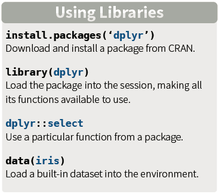
Summary
Topics covered:
- Simple data types
- Data structures (e.g. data frames)
- Control statements (if, while, for)
- Functions
- Reading data from files
- Libraries, getting help, working directory